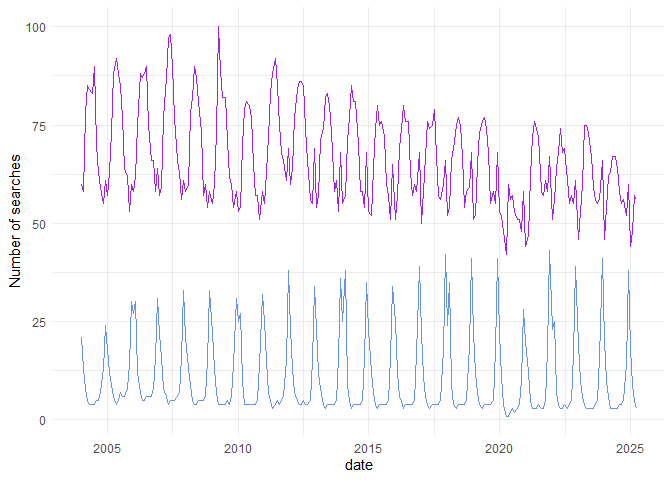
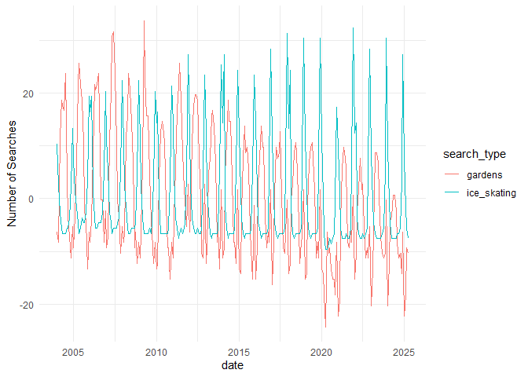
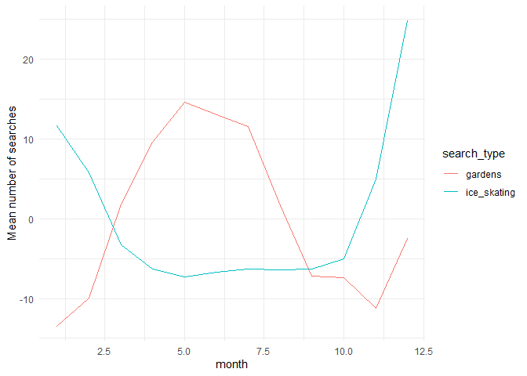
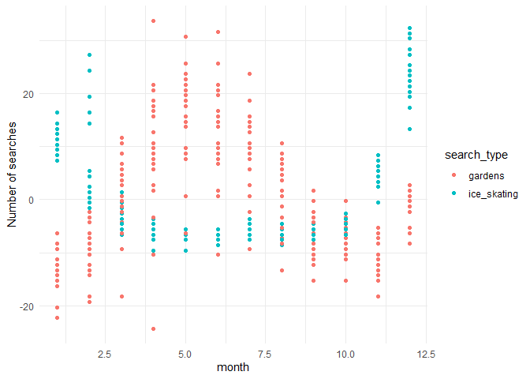

1 FISH470 Intro to the Tidyverse
Amy Van Cise, Sarah Tanja 2024-10-14
- 1 Review R, tidyverse, and markdown
- 2 Tidyverse Tutorial
- 2.1 Introduction
- 2.2 Step 0: Set up environment
- 2.3 Step 1: Import data
- 2.4 Step 2: Wrangle your data
- 2.5 Step 3: Visualize data
- 2.6 Step 2b: Wrangle your data again
- 2.7 Step 3b: Plot the data again
- 2.8 Step 2c: More wrangling!
- 2.9 Step 3c: More plotting!
- 2.10 Step 2d: One last data wrangle
- 2.11 Step 4: Model your data
- 2.12 Conclusion
- 2.13 Optional Bonus Exercise
2 Review R, tidyverse, and markdown
2.1 Review R coding
2.1.0.1 Learning Goals:
Learn to use the R tidyverse to import data and perform basic data tidying and manipulation.
Learn to use the ggplot package in R to create basic plots of your data.
For this week’s lab, I will expect that you have a basic understanding of R, including how to open R, define variables/objects, use basic R vocabulary (e.g. vectors, matrices, and dataframes), and write code using an Rscript or Rmarkdown file. Please review any of these topics that feel unfamiliar to you, using the following videos (from the Cradle to GraveRLinks to an external site. YouTube Channel) as needed:
R for beginners (~10 min)
Rmarkdown Part 1 (~10 min)
Rmarkdown Part 2 (~10 min)
Vectors and Functions (~10 min)
Importing .csv files using tidyverse (~10 min) <- Everyone should watch at least this video!
[!IMPORTANT]
These videos will work best if you follow along with the exercises in R and type out the commands instead of copy-paste!
3 Tidyverse Tutorial
3.1 Introduction
This tutorial steps through some of the basic functions of the tidyverse collection of packages that you will use throughout the course. Work through these steps in groups of 2-3.
[!TIP]
Each person should work in their own R Notebook. Use your notebook to type out each of the commands included in this tutorial, and to take notes on each step.
For this tutorial, we will be comparing trends in the number of Google searches for the terms “gardens” and “ice skating” over time. I downloaded this dataset from the Google trends website. Once you are comfortable with the material in this tutorial, you can download any dataset of search terms from their website and explore trends and patterns using the tidyverse. You can find this dataset on today’s Canvas page - download that dataset now!
3.2 Step 0: Set up environment
Before starting any project, you will always need to set up your environment. This usually starts with creating a new R project, and organizing your project directory structure.
Organize your project directory structure
Here is a simple example to start off:
.
└── my_awesome_project
├── code
│ └── my_code.Rmd
├── data
│ ├── some_data.csv
│ └── more_data.csv
└── output
└── figsNow that you have your project set up:
Open a new
.Rmdfile in yourcodefolderTitle & date your code file!

Insert a code chunk with
Ctrl+Alt+ifor Windows orCmd+Option+ifor Mac.Load libraries
You will need readr, tidyr, dplyr, and ggplot, which are all part of the tidyverse universe and can all be loaded together:
library(tidyverse)[!TIP]
You can use the help function
?function_nameto get more information about any package or function you are using. For example, try?readrto learn more about how to use that package.
3.3 Step 1: Import data
Now that you have your environment set up, the first thing you will want to do is import the data that you are working with.
The most common way this is done is by reading in a comma-separated file (csv) or tab-delimited file (e.g. tsv or txt files). We are using a csv file for this exercise, so you can read in your data using read_csv() from the readr package:
#read in data, assign to a meaningful object name
search_data <- read_csv("../data/GoogleTrends_timeline.csv", col_names = TRUE) #this creates an object that is called a dataframe in R. Data frames, like matrices or data tables, have one column per variable and one row per observation. Unlike matrices or data tables, dataframes can store data of various different types together - for example, numbers, integers, character strings (words), or factors. this dataframe has two columns classified as numeric, and one classified as character.}[!TIP]
Pay attention to the file path you use in
read_csv(). The path should be relative to your R project directory. In this case, the data file is in a folder calleddatathat is one level up../from thecodefolder where your R Notebook is located. If you have trouble reading in your data, double-check your file path.
Once you have imported your data, take a look at it to make sure it makes sense. You can do this in two ways: first, in the environment window (upper right corner), find the variable called search_data and click on the blue arrow. This will show a drop-down summary of your data. You’ll see each column listed as a vector, and it will show you the name of the column, the type or class of data, and the number of observations in each column.
You can also look at your data in the viewer. Click on the name of the data frame in the environment to open it up in the viewer window. Notice that it opens as a separate tab, and that each vector is shown as a column, with a row for each observation. In this case, we have three columns: one for month/year, one for the garden search term, and one for the ice skating search term. There are a total of 256 observations for each of those columns.
Finally, you can print a summary of your data frame in the console using the summary() function:
summary(search_data) Month gardens: (United States) ice skating: (United States)
Length:256 Min. : 42.0 Min. : 1.0
Class :character 1st Qu.: 57.0 1st Qu.: 4.0
Mode :character Median : 64.0 Median : 5.0
Mean : 66.3 Mean :10.6
3rd Qu.: 75.0 3rd Qu.:15.0
Max. :100.0 Max. :43.0 [!TIP]
Also try the
head()andstr()functions… what do these do??
3.4 Step 2: Wrangle your data
Usually, the data that you import won’t be exactly what you want to plot or model. Sometimes it will require some tidying - for example, you may incomplete observations (rows) that you need to remove, or inconsistent data entry that needs to be cleaned up (e.g. if the dates are entered as May 2025 and 04/2025, R will not recognize what this is).
Before moving on, we’re going to do three basic tidying steps. First, we’ll separate the date column so that we have a column for month and another for year. Then we’ll change our column names so that they’re easier to use later. Finally, we’ll specify that the date column is actually populated with dates (instead of just a character strings), which R can understand on a chronological scale. All of these changes will get assigned to a new variable, so that we don’t confuse ourselves later.
To do this cleanly, we’re going to use one of the most powerful functions of the tidyverse: the pipe %>% function. The pipe functions tells R to take the data output from one step and send it to the next step. This allows us to write tidy code, in list formats, that is easy to read later.
[!TIP]
You can insert a pipe operator
%>%using the keyboard shortcutCtrl+Alt+p(Windows) orCmd+Option+p(Mac).
# tidy dataframe
search_data_tidy <- search_data %>%
separate(Month, into = c("year", "month"), sep = "-", remove = FALSE) %>% #separate column into year and month
rename("gardens" = `gardens: (United States)`, "ice_skating" = `ice skating: (United States)`, "date" = Month) %>% #give columns shorter names
mutate(date = ym(date)) #change the date column to year-month format}[!TIP]
separate(): this function takes one column and splits it into two (or more) columns, based on a separator (in this case, the hyphen-between year and month). Theremove = FALSEargument tells R to keep the original column as well.rename(): this function changes the names of columns. The new name is on the left side of the equals sign, and the old name is on the right side. Note that if your column names have spaces or special characters, you need to use backticks`around the old name.mutate(): this function creates a new column or modifies an existing column. In this case, we’re modifying the existingdatecolumn to be in year-month format using theym()function from thelubridatepackage.
Look at your new data frame. It should now have five columns with tidy column names, and the “date” column should be in Date format instead of character format.
3.5 Step 3: Visualize data
Let’s start by plotting our raw data.
search_data_tidy %>% #use the search_data_tidy data frame
ggplot() + #start a plotting environment
geom_line(aes(x = date, y = gardens), color = "purple") + #add a layer with the number of garden searches in each month and year
geom_line(aes(x = date, y = ice_skating), color = "cornflowerblue") + #add a layer with the number of ice skating searches in each month and year
theme_minimal() + #change the look and feel of the plot
ylab("Number of searches")
Pretty cool, right? It looks like we have some cyclical patterns, and maybe they’re opposite each other. It also looks like once of the searches is trending down over time, while the other is staying consistent.
This is a nice visualization of our data, but I think we can do better. Let’s make it easier to see some of those patterns by doing a bit more manipulation of our dataset.
3.6 Step 2b: Wrangle your data again
First, we can’t really tell from the plot which line corresponds with which search. It would be nice to have that information in a legend. In order to do that, we need to give ggplot a single column of data for the y values (number of searches), and a second column of data for the grouping variable. We’ll change the format of our data frame to do that.
It would also be nice if the two lines weren’t so far apart. Clearly, there are more searches overall for “gardens” than for “ice skating”, but we’re more interested in the trends over time. Let’s normalize our data so that we can see those trends more clearly.
# pivot the data frame from wide to long and normalize data
search_data_long <- search_data_tidy %>%
pivot_longer(gardens:ice_skating,
names_to = "search_type",
values_to = "nSearches") %>%
group_by(search_type) %>%
mutate(nSearches = nSearches - mean(nSearches)) %>% # subtract the mean to normalize data
ungroup() #always ungroup your dataframe once you're done[!TIP]
pivot_longer(): this function takes multiple columns and pivots them into a single column. In this case, we’re taking thegardensandice_skatingcolumns and creating a new column calledsearch_typethat indicates which search type each row corresponds to, and a new column callednSearchesthat contains the number of searches for that type.group_by(): this function groups the rows of the data frame according to the values in one or more columns. In this case, we’re grouping bysearch_type, so that we can perform calculations separately for each search type.mutate(): here, we’re modifying thenSearchescolumn to be the number of searches minus the mean number of searches for that search type. This normalizes the data so that we can see trends more clearly.ungroup(): this function removes the grouping from the data frame. It’s a good practice to always ungroup your data frame once you’re done with grouped operations, to avoid unexpected behavior later on.
Look at your data again. You should have some new columns now: search_type, with “gardens” and “ice_skating” as two types of searches, and nSearches, which has been normalized to be the number of searches over or under the mean number of searches.
3.7 Step 3b: Plot the data again
Let’s see what we get with our new dataset
search_data_long %>% #use search_data_long as the input
ggplot() + #create a plotting environment
geom_line(aes(x = date, y=nSearches, color = search_type)) + #create a new layer with number of searches by date, with color groups for each search type
theme_minimal() + #make the plot prettier
ylab("Number of Searches") #make a more descriptive y axis label
This way, we can confirm what we thought we saw before: the cyclical nature of the two search types are opposite each other, and searches for “gardens” have been decreasing over time while searches for “ice skating” have not.
What if we want to know which month has the greatest number of searches for each of the search types? Let’s go back to the data.
3.8 Step 2c: More wrangling!
Probably the easiest way to answer that question will be to get an average of the number of searches in each month across all years in the dataset, and then see which month is the greatest for each one. Let’s do that in two steps this time, so that we can see the output of each.
[!TIP]
group_by(): this function groups the rows of the data frame according to the values in one or more columns. In this case, we’re grouping bysearch_typeandmonth, so that we can perform calculations separately for each combination of search type and month.summarise(): this function creates a new data frame that contains summary statistics for each group. In this case, we’re calculating the mean number of searches for each combination of search type and month.- slice_max(): this function selects the rows with the maximum value for a specified column. In this case, we’re selecting the row with the maximum mean number of searches for each search type.
#summarize searches in each month and assign to a meaningful variable name
searches_by_month <- search_data_long %>% #use search_data_long as the input
group_by(search_type,month) %>% #group by month and search type
summarise(mean_searches = mean(nSearches)) %>% #calculate the (normalized) mean number of searches in each group
ungroup() #always ungroup
#find the months with the highest number of searches and assign to a meaningful variable name
max_searches <- searches_by_month %>% #use searches_by_month as the input
group_by(search_type) %>% #group by search type
slice_max(mean_searches) %>% #get the row with the maximum number of searches for each group
ungroup() #always ungroup
max_searches# A tibble: 2 × 3
search_type month mean_searches
<chr> <chr> <dbl>
1 gardens 05 14.6
2 ice_skating 12 24.8And just like that, we have our answer! But we can also plot this data, if we want to visualize it.
3.9 Step 3c: More plotting!
[!TIP]
as.numeric(): this function converts a character string to a numeric value. In this case, we’re converting themonthcolumn from a character string to a numeric value so that ggplot can plot it on a continuous scale.
searches_by_month %>% #use searches_by_month as input data
ggplot() + #open a ggplot environment
geom_line(aes(x = as.numeric(month), y = mean_searches, color = search_type)) + #add a layer with a line for number of searches in each month, grouped by search type
theme_minimal() + #make it prettier
xlab("month") + #add a more descriptive x axis label
ylab("Mean number of searches") #add a more descriptive y axis label}
This plot allows us to see seasonal trends within a year. Pretty cool! We can also plot all of the years separately, instead of an average.
search_data_long %>% #use search_data_long as input data
ggplot() + #open a ggplot environment
geom_point(aes(x = as.numeric(month), y = nSearches, color = search_type)) + #add a layer with a point for number of searches in each month, grouped by search type
theme_minimal() + #make it prettier
xlab("month") + #add a more descriptive x axis label
ylab("Number of searches") #add a more descriptive y axis label}
[!TIP]
theme_minimal(): this function changes the appearance of the plot to a minimal theme, which removes some of the background elements and makes the plot cleaner.Note that additional functions are added to ggplot using the
+operator, which allows you to layer multiple elements onto the plot.
You can save any of these plots using the ggsave() function. For example, to save the last plot we made:
ggsave(filename = "../output/figs/searches_by_month.png", width = 6, height = 4)[!TIP]
ggsave(): this function saves the last plot that was created to a file. Thefilenameargument specifies the path and name of the file to save the plot to, and thewidthandheightarguments specify the size of the plot in inches.** Pay attention to the file path you use in
ggsave(). The path should be relative to your R project directory. In this case, the output file is being saved in a folder calledoutput/figsthat is one level up../from thecodefolder where your R Notebook is located. If you have trouble saving your plot, double-check your file path.
The data wrangling and visualization cycle can happen a number of times, and tells us a lot about what patterns are emerging in our dataset. Once we have a good sense of what’s going on, we might want to test some of our hypotheses using statistics. We’re not going to go in depth into modeling in this class - if you want to go into research, you should always be taking as many quantitative classes as you can.
For now, let’s test out one basic analysis to see whether our maximum search months are significantly greater than our minimum search months. Our null hypothesis here is that there are no significant differences between months with maximum and minimum searches, for either search type. We’ll have two alternate hypotheses: that there are significant differences between maximum and minimum months for (1) one of the two search types, or (2) both of the search types.
We’ll need to do a bit more data wrangling, and then we’ll use an ANOVA to determine whether the difference between the maximum and minimum months is greater than the differences among years within each month.
3.10 Step 2d: One last data wrangle
We know that the maximum searches for “gardens” happen in May, and the most searches for “ice skating” happen in December. I’m going to eyeball the data and say searches for “gardens” are lowest in January, and searches for “ice skating” are lowest in May. You could confirm that by summarizing the data as we did in Step 2c. Before we can model our data using an ANOVA, we need to filter it to contain the appropriate months and search types.
[!TIP]
filter(): this function filters the rows of the data frame according to specified conditions. In this case, we’re filtering to include only the months with maximum and minimum searches for each search type, and then filtering again to include only the relevant search type.
#filter data and assign it a meaningful variable name
maxmin_gardens <- search_data_long %>% #use search_data_long as the input
filter(month %in% c("05","01")) %>% #include only the months with max and min nSearches
filter(search_type == "gardens") #include only the "gardens" search term
#filter data and assign it a meaningful variable name
maxmin_iceskate <- search_data_long %>% #use search_data_long as the input
filter(month %in% c("05","01")) %>% #include only the months with max and min nSearches
filter(search_type == "ice_skating") #include only the "gardens" search term}Now we’re ready to test our hypothesis with an ANOVA.
3.11 Step 4: Model your data
First let’s look at searches for “gardens”:
#run an ANOVA and assign it a meaningful variable name
gardens_anova <- aov(formula = nSearches ~ month, data = maxmin_gardens) #y variable is nSearches, x variable is month, using the maxmin_gardens dataset summary(gardens_anova)}Looking at a summary of our ANOVA shows us that the difference in number of searches between maximum and minimum months is statistically significant. Based on this, we can reject our null hypothesis and focus on our two alternative hypotheses.
summary(gardens_anova) Df Sum Sq Mean Sq F value Pr(>F)
month 1 8420 8420 173.4 2.57e-16 ***
Residuals 41 1991 49
---
Signif. codes: 0 '***' 0.001 '**' 0.01 '*' 0.05 '.' 0.1 ' ' 1Now let’s try searches for “ice skating”:
#run an ANOVA and assign it a meaningful variable name
iceskate_anova <- aov(formula = nSearches ~ month, data = maxmin_iceskate) #y variable is nSearches, x variable is month, using the maxmin_iceskate dataset summary(iceskate_anova)}The summary of our ice skating ANOVA shows us that the difference in number of searches between maximum and minimum months is also statistically significant. Based on this, we would conclude that our 2nd alternative hypothesis is true: that the number of searches in maximum and minimum months is different for both search types.
summary(iceskate_anova) Df Sum Sq Mean Sq F value Pr(>F)
month 1 3854 3854 1206 <2e-16 ***
Residuals 41 131 3
---
Signif. codes: 0 '***' 0.001 '**' 0.01 '*' 0.05 '.' 0.1 ' ' 13.12 Conclusion
Once you’ve gone through this tutorial, you should have a decent feel for: 1. The tidy data analysis workflow, and 2. How to use the tidyverse to wrangle and visualize your data.
This is just the tip of the iceberg. R and tidyverse are both community-supported coding languages, and because we have a great community, R is a powerful coding language that allows you to do almost anything you can dream of. Over the coming weeks we’ll use tidyverse and the tidy data analysis workflow to analyze real marine mammal research questions. We’ll (1) wrangle and visualize data, (2) make observations about the patterns we see, (3) use those observations to develop hypotheses, and (4) test those hypotheses with basic models.
Today we used some of the most common functions in tidyverse: filter, separate, mutate, summarise, pivot, and ggplot. There are many many more.
There are good cheat sheets for:
- tidyr
- dplyr
- lubridate
- ggplot
- and more Posit Cheatsheets !
If you finish this tutorial and have extra time, try out this exercise:
3.13 Optional Bonus Exercise
Did you notice that the number of searches for one search type seemed to decrease while the other did not? Let’s see if that was real.
- First write out your null and alternative hypotheses.
- Then, plot the data: use
search_data_longand ageom_point()layer to plot year on the x axis andnSearcheson the y axis, withsearch_typeas color (grouping variable). Add a smoothed line: usegeom_smooth()to add a linear regression with the same x, y, and grouping variables. - Filter
search_data_longto create two separate dataframes: one for “gardens” and one for “ice_skating”. - Run a linear model for each dataset (lm()) and look at the summary to determine whether the relationship between
yearandnSearchesis significant for each search type.